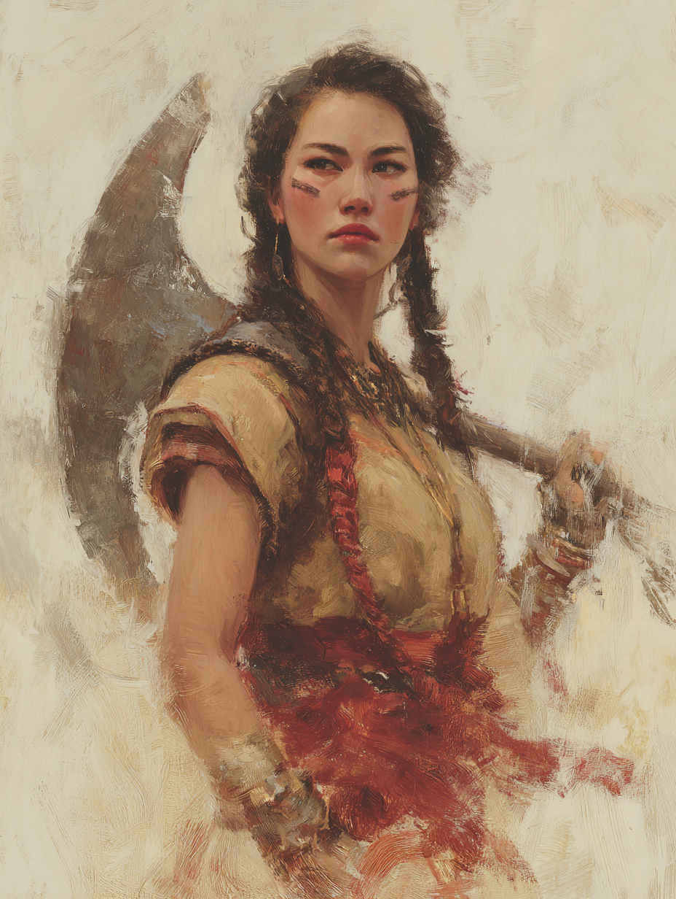

Aymara Flameshaper
Djinnbound of the Clan-Flames · Chosen of Al-Ghaib

Steppe Nomad · Aged Twenty-Two
On the Subject
Aymara was chosen by her clan as an infant — the omens in the ceremonial flames marked her. The sages drew her inside the ring of incense and ancestral fires and called upon Al-Ghaib; a desert djinn answered, and its essence wound into her unborn soul before she could speak its name. She grew up knowing the weight of that bond. Her clan kept her close, trained her in the old ways of the spirit-warrior, and set her to protect their caravans as they moved along the Silk Road. The djinn rides her shoulder unseen, snapping into being when she rages — an invisible companion that bends light and pushes her enemies where she wills.
She does not fully understand the djinn. It does not always speak. Once, she saw what happens when a binding goes wrong — a man down the road taken by a lesser djinn that had not been welcomed in, his eyes gone glassy and his voice not his own. She does not speak of it. But when she swings her greataxe, its echoes carry farther than steel should reach, and that is enough for the road.
Faculties & Saving Throws
Rolled block #13: 10, 12, 15, 15, 16, 17 · Human +1 to all six · no ASI (Mounted Combatant feat)
Bearing on the Route
Skills
| Skill | Bonus | Source |
|---|---|---|
| Athletics | +6 | Outlander |
| Survival | +3 | Outlander |
| Intimidation | +2 | Barbarian |
| Perception | +3 | Barbarian |
| Animal Handling | +3 | Beast Tamer (Apprentice) |
Class Features
Bonus action. While raging she has advantage on Strength checks and saves, deals +2 damage on Strength-based melee attacks, and has resistance to bludgeoning, piercing, and slashing damage. Lasts 1 minute or until she ends her turn without attacking a hostile creature or taking damage since her last turn — but Power Unleashed below extends this when she forces a hostile to move.
While wearing no armour, AC = 10 + Dex mod + Con mod = 10 + 3 + 3 = 16. May still use a shield.
On her first attack of the turn, she may attack recklessly — advantage on Strength-based melee attack rolls this turn, but all attacks against her have advantage until her next turn.
Advantage on Dex saves against effects she can see (traps, spells, etc.), provided she is not incapacitated, blinded, or deafened.
When she rages, her bound djinn manifests on her back as an unseen presence that occasionally catches light. While raging she gains:
- Echoing Reach — her reach with a melee weapon increases by 5 ft. (so 10-ft. reach with greataxe).
- Djinn-Hand — as a bonus action, attempt to move a creature within her reach 5 ft. in any direction (not ending out of her reach). Str save DC 13 (8 + PB + Con). On a fail, the creature is moved. Willing creatures may choose to fail.
- Persistent Rage in Movement — if she grapples or forces a hostile creature to move on her turn, her rage does not end at the end of that turn due to inactivity.
Origin (rolled on the d6 Djinnbound table — result 1): She was chosen before birth, as the omens in the flames indicated her.
Feat
Trained from childhood on the steppe; she rides better than she walks.
- Advantage on melee attack rolls against any unmounted creature smaller than her mount.
- She may force an attack targeted at her mount to target her instead.
- If her mount is subjected to an effect that allows a Dexterity save for half damage, it instead takes no damage on a success and only half on a fail.
Background — Outlander (Tribal Nomad)
She has an excellent memory for maps and geography and can always recall the general layout of terrain, settlements, and other features around her. She can find food and fresh water for herself and up to five other people each day, provided that the land offers berries, small game, water, and so forth.
She has spent her life among the migrating clans of the steppe, following herds and seasonal pasture. Her clan keeps horses, sheep, and goats; their wealth is in herds.
Your Journey
Lifepath · rolled and chosen entries from the Silk Road book
Hostile important figure.
Met someone in a position of power — a governor, a general, or a senior officer — and earned their enmity. GM-assigned; the figure is not yet named in the chronicle.
Saw a humanoid possessed by a lesser djinn.
This event is heavy with implication for a Djinnbound: she has seen, with her own eyes, what can go wrong when a binding sours or a djinn rides without consent. She does not speak of it.
A first love, left behind.
Not married — a clan-mate her own age. Whether the relationship ended in distance, death, or her own departure is open for play.
Committed assault.
The crime is on her record somewhere — committed, not falsely accused. In a clan warrior's life this might have been defending a caravan brother, or a youthful brawl that went too far. Defensible, but the law sometimes does not care.
Made an enemy of an adventurer.
Another adventurer-type figure bears her ill will. GM-assigned.
Drank a potion.
What it was, who gave it to her, and what it did — open at the GM's discretion. Given her upbringing, plausibly a clan ritual draught taken at adolescence; plausibly something darker.
Profession
Silk Road PEX system · Apprentice rank
Beast Taming (free): Proficiency in Animal Handling (reflected in her skills table). She can attempt to soothe and tame wild beasts — horses, donkeys, mules, bears, boars, lions, panthers — by spending 1 hour with the beast and proper tools, then succeeding on a CR-scaled Animal Handling check. Already-tamed mounts will obey her on a DC 10 Animal Handling check if their original owner is not visible.
Mounted Combatant + Beast Tamer pair into a cavalry-shock specialist: she rides, she tames the mount, and the djinn rides with her.
Equipment
- Greataxe — 1d12 slashing, heavy, two-handed; +6 to hit / 1d12+4; +2 rage damage while raging → 1d12+6. 10-ft. reach while raging.
- 2× Handaxes — 1d6 slashing, light, thrown 20/60; +6 to hit / 1d6+4.
- Hanchar — Silk Road dagger; 1d4 slashing (handy — may deal piercing), finesse, light; +6 to hit / 1d4+4 (Str via Finesse, since Str 18 beats Dex 16).
- None worn — Unarmored Defense. She wears nomadic robes, hide-lined coat, and felt boots — purely for the cold and the sun. Final AC 16.
- Djinn-bound talisman — a stone carved with spiraling marks, hung from a leather thong. Not a spellcasting focus (she casts no spells); it serves as the anchor for her bond to the djinn. Loss does not break the bond, but she would not part with it.
- Explorer's pack — backpack, bedroll, mess kit, tinderbox, 10 torches, 10 days of rations, waterskin, 50 ft. hempen rope.
- Hunting trap
- Trophy from a slain spirit-beast — a desiccated claw, wrapped in red cord.
- Set of traveler's clothes
- Pan flute — clan instrument, used in rituals.
- Belt pouch
- A warhorse and tack — kept with the clan or stabled at the last caravanserai — comes and goes with the journey.
Personality
"I do not flinch from what the elders chose for me. The djinn rides with me; I ride with my clan."
"The old ways kept us alive on the steppe. They will keep us alive on the road."
"My clan chose me before I could speak. Whatever the djinn wants of me in the end, my clan comes first."
"I do not know what the djinn truly is. I have never asked. Some nights I am afraid of the answer."
Connections
- Nazim ibn Yusuf — Two summers ago, Aymara's clan camped beside a half-buried kurgan-stelae two days west of Samarkand. A wandering scholar in a quilted under-tunic appeared at the edge of the camp at dusk, asking permission to read the inscription before the clan moved on. Her aunts let him stay three nights; he traced rubbings by lamp-light, ate at their fire, and left her grandmother a folded paper covered in his careful Old Turkic glyphs — a copy, he said, of the line her grandmother had been worrying at. Aymara remembers Nazim as the quiet one whose hands shook a little when he touched the carved stone. She does not yet know he came back the following spring and read the line again, alone, and that he is still trying to understand what it said.
- Farideh al-Saffar — A perfume-caravan out of Baghdad bound for Bukhara hired Aymara's clan as escort across the Karakum the year she turned twenty. The lead merchant was a Baghdad woman with cedar-chests of vials and a tongue for bargaining that made the bandits Aymara was paid to fight unnecessary on three separate evenings. At the end of the route, Farideh paid in clan-livestock by the head and tucked a small vial of rose-of-Qaf into Aymara's saddlebag as bonus. Aymara still has the vial, unopened. The djinn does not like it. She has not opened it for that reason, and one other reason she does not say.
Where the steppe meets the trade-road and bandits learn the old answer to the new question, send her; the djinn that rides her shoulder costs us nothing and answers questions we are not permitted to ask.